PacketStreamer
Deepfence PacketStreamer is a high-performance remote packet capture and collection tool. It is used by Deepfence's ThreatStryker security observability platform to gather network traffic on demand from cloud workloads for forensic analysis.
Primary design goals:
- Stay light, capture and stream, no additional processing
- Portability, works across virtual machines, Kubernetes and AWS Fargate. Linux and Windows
PacketStreamer sensors are started on the target servers. Sensors capture traffic, apply filters, and then stream the traffic to a central reciever. Traffic streams may be compressed and/or encrypted using TLS.
The PacketStreamer receiver accepts PacketStreamer streams from multiple
remote sensors, and writes the packets to a local pcap capture file

PacketStreamer sensors collect raw network packets on remote hosts. It selects packets to capture using a BPF filter, and forwards them to a central reciever process where they are written in pcap format. Sensors are very lightweight and impose little performance impact on the remote hosts. PacketStreamer sensors can be run on bare-metal servers, on Docker hosts, and on Kubernetes nodes.
The PacketStreamer receiver accepts network traffic from multiple sensors,
collecting it into a single, central pcap file. You can then process the
pcap file or live feed the traffic to the tooling of your choice, such as
Zeek, Wireshark Suricata, or as a live stream for Machine Learning models.
When to use PacketStreamer
PacketStreamer meets more general use cases than existing alternatives. For example , Use PacketStreamer if you need a lightweight, efficient method to collect raw network data from multiple machines for central logging and analysis.
Quick Start

For full instructions, refer to the PacketStreamer Documentation.
You will need to install the golang toolchain and libpcap-dev before building PacketStreamer.
# Pre-requisites (Ubuntu): sudo apt install golang-go libpcap-dev
git clone https://github.com/deepfence/PacketStreamer.git
cd PacketStreamer/
make
Run a PacketStreamer receiver, listening on port 8081 and writing pcap output to /tmp/dump_file (see receiver.yaml):
./packetstreamer receiver --config ./contrib/config/receiver.yaml
Run one or more PacketStreamer sensors on local and remote hosts. Edit the server address in sensor.yaml:
# run on the target hosts to capture and forward traffic
# copy and edit the sample sensor-local.yaml file, and add the address of the receiver host
cp ./contrib/config/sensor-local.yaml ./contrib/config/sensor.yaml
./packetstreamer sensor --config ./contrib/config/sensor.yaml
Who uses PacketStreamer?
- Deepfence ThreatStryker uses PacketStreamer to capture traffic from production platforms for forensics and anomaly detection.
Get in touch
Thank you for using PacketStreamer.
Start with the documentation
 Got a question, need some help? Find the Deepfence team on Slack
Got a question, need some help? Find the Deepfence team on Slack- productsecurity at deepfence dot io: Found a security issue? Share it in confidence
- Find out more at deepfence.io
Security and Support
For any security-related issues in the PacketStreamer project, contact productsecurity at deepfence dot io.
Please file GitHub issues as needed, and join the Deepfence Community Slack channel.
License
The Deepfence PacketStreamer project (this repository) is offered under the Apache2 license.
Contributions to Deepfence PacketStreamer project are similarly accepted under the Apache2 license, as per GitHub's inbound=outbound policy.